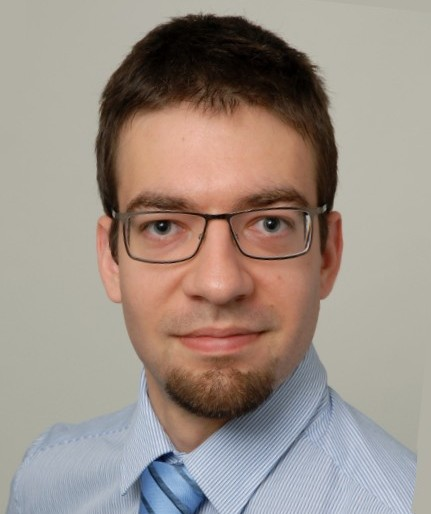

István Sárándi
PhD Student in Computer Vision and Machine Learning

Bio
For long, I have been fascinated by the human effort to understand the mind in the abstract,
and to create intelligence through actual down-to-earth engineering practice (and especially where these two meet!).
But mainly, I enjoy building things and understanding why they (don't) work.
I became interested in the details of machine learning, signal processing and robotics during my bachelor exchange semester at the Karlsruhe Institute of Technology (KIT) in Germany.
Back home at the Budapest University of Technology and Economics (BME) in Hungary, I specialized in Autonomous Intelligent Systems and studied in the German-language Computer Engineering degree program in cooperation with KIT.
I wrote my bachelor thesis at a healthcare institute on diagnosis classification using neural networks and support vector machines.
During my internship at the Humanoids and Intelligence Systems Lab at KIT, I worked with volumetric CT scans and became more interested in image processing and vision.
At the start of my master studies at RWTH Aachen University, I joined the Institute of Medical Informatics and worked on various image processing projects as a student assistant. Supervised by Prof. Dr. Thomas Deserno, I co-authored one journal and two conference papers on measuring allergic eye redness for clinical trials and monitoring wound healing over time.
As I became more excited about the developments in learning-based computer vision, I joined RWTH's Computer Vision Group as a student assistant and worked on crowd counting algorithms.
My master thesis is about counting people in videos.
In 2017, I joined the Computer Vision Group as a PhD student, and received a three-year funding scholarship from the Bosch Research Foundation. I have since been working on 3D human pose estimation methods based on deep learning. Besides research, I manage our server infrastructure and GPU cluster at the lab.
Publications

Reposing Humans by Warping 3D Features
Markus Knoche, István Sárándi, Bastian Leibe
Workshop on Human-Centric Image/Video Synthesis, Conference on Computer Vision and Pattern Recognition (CVPRW), 2020.
Metric-Scale Truncation-Robust Heatmaps for 3D Human Pose Estimation
István Sárándi, Timm Linder, Kai O. Arras, Bastian Leibe
IEEE International Conference on Automatic Face and Gesture Recognition (FG), 2020.
Visual Person Understanding through Multi-Task and Multi-Dataset Learning
Kilian Pfeiffer, Alexander Hermans, István Sárándi, Mark Weber, Bastian Leibe
German Conference on Pattern Recognition (GCPR), 2019.
Synthetic Occlusion Augmentation with Volumetric Heatmaps for the 2018 ECCV PoseTrack Challenge on 3D Human Pose Estimation
(1st Place)István Sárándi, Timm Linder, Kai O. Arras, Bastian Leibe
Extended abstract at the ECCV PoseTrack Workshop (ECCVW), 2018.
How Robust is 3D Human Pose Estimation to Occlusion?
István Sárándi, Timm Linder, Kai O. Arras, Bastian Leibe
Workshop on Robotic Co-Workers 4.0 at IEEE/RSJ International Conference on Intelligent Robots and Systems (IROSW), 2018.
Quantitative Conjunctival Provocation Test for Controlled Clinical Trials
István Sárándi, Dan Philipp Claßen, Anatoli Astvatsatourov, Oliver Pfaar, Ludger Klimek, Ralph Mösges, Thomas M. Deserno
Methods of Information in Medicine, 2014;53(4):238-44
Towards Quantitative Assessment of Calciphylaxis
Thomas M. Deserno, István Sárándi, Abin Jose, Daniel Haak, Stephan Jonas, Paula Specht, Vincent Brandenburg
SPIE Medical Imaging 2014: Computer-Aided Diagnosis (Vol. 9035, p. 90353C), 2014.
Automatic Conjunctival Provocation Test Combining Hough Circle Transform and Self-Calibrated Color Measurements
Suman Raj Bista, István Sárándi, Serkan Dogan, Anatoli Astvatsatourov, Ralph Mösges, Thomas M. Deserno
SPIE Medical Imaging 2013: Computer-Aided Diagnosis (Vol. 8670, p. 86702J), 2013.
Quantitative Conjunctival Provocation Test
István Sárándi, Thomas Deserno, Dan Classen, Oliver Pfaar, Anatoli Astvatsatourov, Ralph Mösges
58th Annual Meeting of the German Association for Medical Informatics, Biometry and Epidemiology (GMDS), 2013.
Theses and Term Papers
Pedestrian Line Counting by Probabilistic Combination of Flow and Appearance Information
István Sárándi
RWTH Aachen University, Germany, 2015.
Feature Mining for Localized Crowd Counting
István Sárándi
Seminar Current Topics in Computer Vision and Machine Learning, RWTH Aachen University, 2014.
Subspace Clustering of High Dimensional and Streaming Data
István Sárándi
Seminar Multimedia Retrieval and Data Mining, RWTH Aachen University, 2013.
Computing Semantic Similarity Between Medical Learning Objectives Across Catalogues
István Sárándi
Institute of Medical Informatics, RWTH Aachen University, 2016.
Developing a Medical Coding Support System
István Sárándi
Budapest University of Technology and Economics, Hungary, 2011.
Teaching
- Summer term 2020
- Computer Vision
- Seminar Current Topics in Computer Vision and Machine Learning
- Winter term 2019/20
- Summer term 2019
- Computer Vision
- Seminar CV+ML
- Summer term 2018
- Winter term 2017/18
- Einführung in die Informatik (Intro to CompSci, in German)